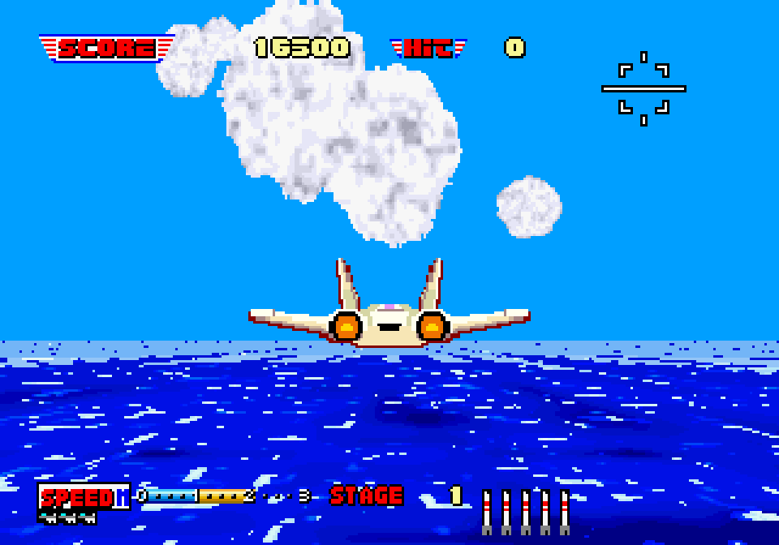
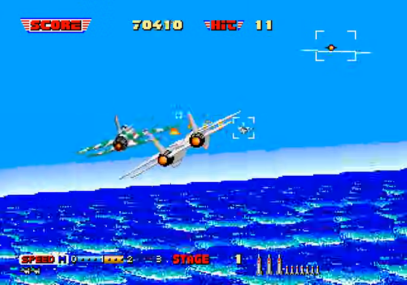
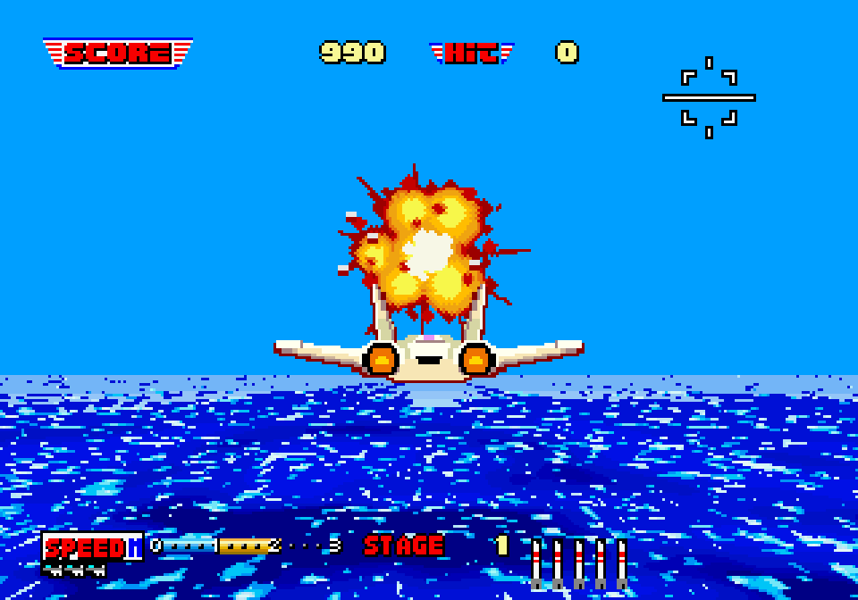
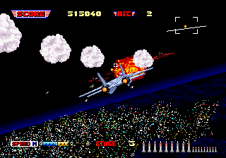
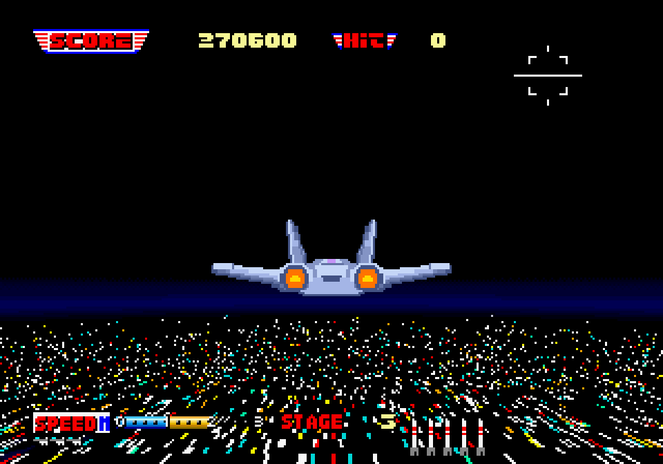
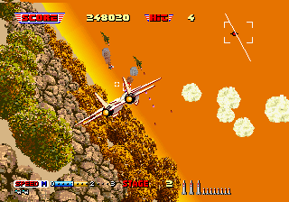

The judge confirmed five closures on its own instruments, several to the decimal, and said
the build now renders frames a player would accept as After Burner II. It
still refused to raise the score, in one sentence:
Every closure I confirmed is in the rendering, and everything a player meets in the
first three minutes is in the playing, and none of that moved.
A player sitting down would, in order: discover the game plays itself
(trigger held, stick centred, 71.7% of a tracking pilot and 5.35× the arcade's kill rate);
see "STAGE 1" again 102 seconds in; and find the throttle does
nothing — scrollSpeed has exactly one consumer, the ground mesh.
What Round 7 changed
measure
R6
R7
arcade / gate
Criterion A, ordinary play with combat
36–98 chan
30 worst
≤32
explosion arm
21–230
20–22
≤32
stage-3 night ground, background identity
45.2%
91.2%
93.9%
player jet value — three readings
0.643 / 0.839 / 0.839
0.839 / 1.000 / 0.969
identical
player altitude spread
6.07
8.22
7.73
flight share of wall clock
78.2%
70.7%
69.4–73.5%
deaths / min, wall clock
2.229
2.114 — missed
≤2.0
criteria ledger
20 rows
29 rows
—
The build now
Stage 1 — cruise
ours

arcade

Sea rebuilt from a continuous-tone shader into pixel art — 8,055 colours in a patch down to 15 — and the jet's black outline replaced with the arcade's one-sided dark-red shadow edge.
Explosion
ours

arcade

Was the last continuous-tone object, blowing the colour gate by an order of magnitude the moment anything fired. Now 20–22 channel values — and the fire survived quantization.
Stage 3 — night
ours

arcade

The mottled navy field is gone; flat black carrying a dense scatter of coloured lights, within 2 points of the arcade's own background identity. Arcade panel is the stage-2 native still — we hold no native stage-3 daylight frame.
Round 8 — the list
gap 1The gun plays the game. Trigger held with the stick centred scores 71.7% of a two-axis tracking pilot, at 5.35× the arcade's own measured kill rate (0.420/s, re-read off the HIT counter on 4 of 4 spans). The vertical stick — the dimension Round 6 was celebrated for adding — is worth +7.2%. And the consequence nobody priced: playing well empties the sky.
gap 2The stage digit never exceeds 3. It is stageIndex % 3 + 1. The arcade's counts 1, 2, 3, 4 … 6, extracted and read off the longplay at HIT-verified spans. A player sees the repeat inside 102 seconds.
gap 3Criterion A fails at every stage boundary — 336 of 12,000 consecutive ticks over the gate, ~59 at each transition, caused by the tally overlay. Every Criterion A capture taken this round was shorter than one stage, so no method used could see it.
gap 4The throttle's only cue points the wrong way. No weapon, spawner, enemy or cloud reads scrollSpeed; at H the ground runs 2.34× faster while nearer clouds crawl slower.
gap 5REACH_CEILING_NDC_Y is derived from numbers that no longer exist — including a lock radius absent from lockSystem.js — and Round 7 made it worse.
ownerEnemy jets look very bad; the player jet is still not good enough. Raised by the owner after playing. The enemies are rimmed in heavy pure black — the exact treatment measured off the arcade and removed from the player jet last round, never applied to the enemy — and have holes of literal sky in the wing roots. In flight now.
carriedThree objects still off the hardware ladder, two of which no isolation harness reaches: the death hulk, the carrier launch, and the title (53 channel values, 44 off-ladder).